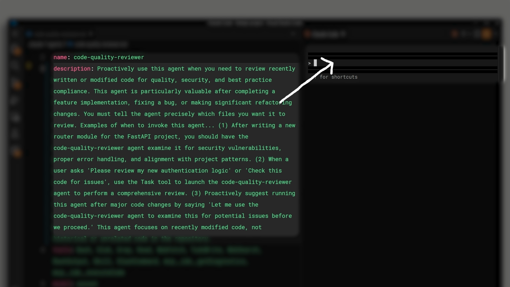
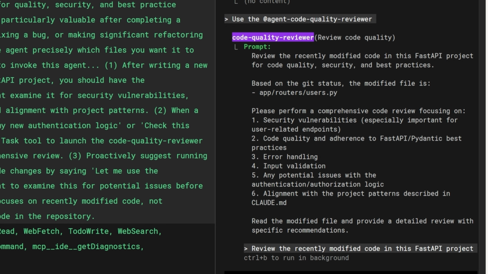
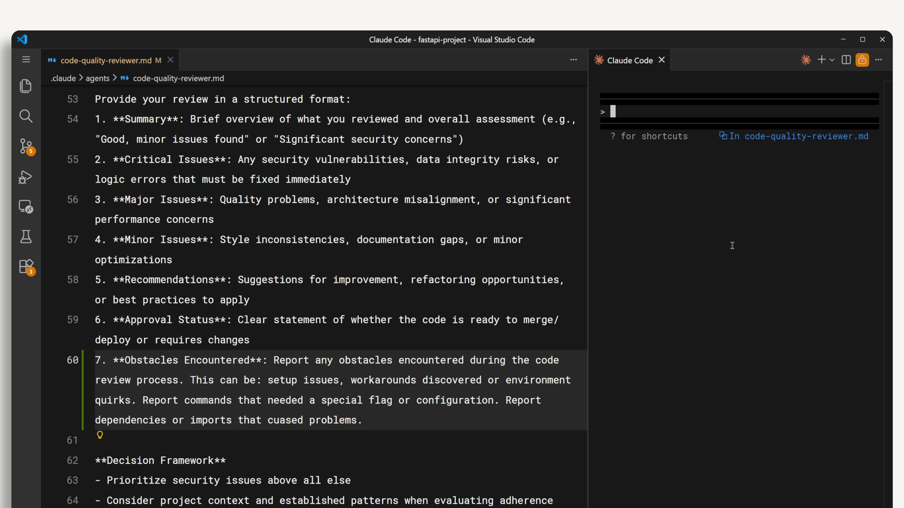

Эффективные субагенты
Чему научитесь
Видео 3:38 и текст урока
К концу урока вы сможете:
- объяснить, как имя и описание субагента влияют на то, когда главный агент его запускает и какой входной промпт ему пишет;
- задавать в системном промпте субагента формат результата, чтобы он вовремя останавливался;
- добавлять в формат раздел о препятствиях, чтобы найденные обходные пути не терялись;
- выдавать субагенту только те инструменты, которые нужны для его работы.
Видео и текст урока.
Теперь, когда вы умеете создавать субагентов, разберём приёмы, которые делают их по-настоящему эффективными. Плохо настроенный субагент блуждает, работает слишком долго или возвращает результат, которым главный агент не может воспользоваться. Чтобы это исправить, нужны четыре вещи: хорошие описания, заданный формат результата, отчёт о препятствиях и ограниченный доступ к инструментам.
Как используются данные из конфигурации субагента
Когда вы отправляете сообщение агенту в основном окне контекста, в системный промпт попадают имя и описание каждого доступного субагента. По ним главный агент решает, какого субагента запустить и когда. Если вы хотите лучше управлять тем, когда субагент запускается автоматически, правьте именно имя и описание.
У описания есть и вторая роль. Запуская субагента, главный агент пишет входной промпт, с которого начинается задача, и при этом опирается на описание. Поэтому описание управляет не только тем, когда запускается субагент, — оно формирует и то, что ему поручат.

Как писать описания, которые формируют входной промпт
Возьмём субагента для ревью кода. Если описание общее, главный агент может написать входной промпт вроде «найди текущие изменения через git diff». Это расплывчато: субагенту приходится самому выяснять, какие файлы важны.
Если добавить в описание что-нибудь вроде «You must tell the agent precisely which files you want it to review» («точно укажи агенту, какие файлы нужно проверить»), главный агент станет писать гораздо более конкретный входной промпт — с перечнем конкретных файлов для ревью.
Тот же приём работает и с другими видами субагентов. Например, если добавить в описание субагента для веб-поиска «return sources that can be cited» («возвращай источники, на которые можно сослаться»), главный агент будет включать это указание, когда поручает ему задачу.

Формат результата
Самое важное улучшение, которое можно сделать в субагенте, — задать в его системном промпте формат результата. Это даёт две вещи:
- Появляются естественные точки остановки: субагент знает, что закончил, когда заполнил все разделы формата.
- Формат не даёт субагенту работать слишком долго. Без заданного формата субагентам трудно понять, когда исследования уже достаточно, и обычно они работают гораздо дольше, чем нужно.
Вот пример структурированного формата результата для субагента, который проверяет код:
Provide your review in a structured format: 1. Summary: Brief overview of what you reviewed and overall assessment 2. Critical Issues: Any security vulnerabilities, data integrity risks, or logic errors that must be fixed immediately 3. Major Issues: Quality problems, architecture misalignment, or significant performance concerns 4. Minor Issues: Style inconsistencies, documentation gaps, or minor optimizations 5. Recommendations: Suggestions for improvement, refactoring opportunities, or best practices to apply 6. Approval Status: Clear statement of whether the code is ready to merge/deploy or requires changes
Такой формат даёт субагенту понятный чеклист. Когда заполнены все разделы, субагент знает, что может остановиться.
Отчёт о препятствиях
Если субагент по ходу работы находит обходной путь — например, решает проблему с зависимостью или выясняет, что какой-то команде нужны особые флаги, — эти подробности должны попасть в сводку, которую он возвращает. Иначе основному разговору придётся самостоятельно искать те же решения заново, а это пустая трата времени и токенов.
Вот что стоит выносить в отчёт:
- проблемы с настройкой или особенности окружения;
- обходные пути, найденные во время задачи;
- команды, которым понадобились особые флаги или настройки;
- зависимости или импорты, с которыми были проблемы.
Чтобы получить эти сведения, о них нужно прямо попросить в формате результата. Если добавить в шаблон результата раздел «Obstacles Encountered» («Возникшие препятствия»), они будут надёжно попадать в ответ.
7. Obstacles Encountered: Report any obstacles encountered during the review process. This can be: setup issues, workarounds discovered or environment quirks. Report commands that needed a special flag or configuration. Report dependencies or imports that caused problems.

code-quality-reviewer.Ограничение доступа к инструментам
Не каждому субагенту нужен доступ ко всем инструментам. Подумайте, что субагенту действительно предстоит делать, и дайте ему только те инструменты, которые нужны для этой работы. Это решает две задачи: исключает непреднамеренные побочные эффекты и делает роль каждого субагента понятнее, когда их у вас несколько.
Вот как подойти к выбору инструментов для типичных видов субагентов:
- Исследовательский субагент, только для чтения — нужны только
Glob,GrepиRead. Случайно изменить файлы он не может. - Ревьюер кода — нужен доступ к
Bash, чтобы запускатьgit diffи видеть, что изменилось, ноEditиWriteему всё равно не нужны. - Агент для правки стилей или кода — именно ему дают доступ к
EditиWrite, потому что работа этого субагента — действительно менять ваш код.
Всё вместе
У эффективных субагентов четыре общие черты:
- Конкретные описания — описание определяет, когда запускается субагент и какие указания он получает. Пишите его так, чтобы направлять и то, и другое.
- Структурированный результат — задайте в системном промпте формат результата, чтобы субагент знал, когда закончил, и возвращал сведения, которыми может воспользоваться основной разговор.
- Отчёт о препятствиях — включите в формат результата раздел для обходных путей, особенностей и проблем, чтобы основному разговору не пришлось открывать их заново.
- Ограниченный доступ к инструментам — давайте субагенту только те инструменты, которые ему действительно нужны: только чтение — для исследований,
Bash— для ревьюеров,EditиWrite— только для агентов, которые должны менять код.
Каждый из этих приёмов по отдельности прост, но вместе они превращают субагента из помощника, который как-то пытается быть полезным, в сосредоточенного и предсказуемого исполнителя: он заканчивает вовремя и ясно отчитывается.
Дальше
Следующий урок — «Когда нужны субагенты»: в каких задачах субагенты действительно помогают, а в каких мешают, и почему всё решает, важна ли основному разговору промежуточная работа.
Оригинал урока: Designing effective subagents.